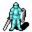

Prim guard captain¶Where to find Prim guard captain: Prim: Blackwater mountain 29
{ .sprite }
| Type | NPC (talk only; never fought) |
| Found in | Prim |
| Introduced | v0.7.14 |
Quests¶
- Climbing up is forbidden: stages 9, 40
- Blackwater Mountain events (hidden flag): stages 18, 43
Dialogue simulator¶
Set your quest stages and items, then talk to Prim guard captain. Same rules as the game: same checks, same options, same effects.
Rules verified against v0.8.18 game code (ConversationController.java) and dialogue data.
Dialogue (64 lines)
Exactly as in the game files. Each line appears once; links jump to where a choice leads.
prim_guard5_s (silent check: the first matching branch below is taken)
- branch 1 (if reached stage 43 of Blackwater Mountain events (hidden flag)) → capvjern_41
- branch 2 (if reached stage 56 of Climbing up is forbidden; reached stage 18 of Blackwater Mountain events (hidden flag)) → capvjern_23
- branch 3 (if reached stage 40 of Climbing up is forbidden) → capvjern_22
- branch 4 (if reached stage 18 of Blackwater Mountain events (hidden flag)) → capvjern_15
- branch 5 (if reached stage 17 of Blackwater Mountain events (hidden flag)) → capvjern_1
- branch 6 → prim_guard5_1
capvjern_41 Prim guard captain: “I'll wait here. Farewell, $playername.”
- “Bye.” → conversation ends
- “Shadow be with you.” → conversation ends
- “As useful as always, captain.” → conversation ends
capvjern_23 Prim guard captain: “Hey, $playername! You're back, where is the general?”
- Next → capvjern_24
capvjern_22 Prim guard captain: “$playername, you must reach Blackwater Settlement and get help from General Ortholion.”
- “OK, bye.” → conversation ends
- “Shadow be with you.” → conversation ends
capvjern_15 Prim guard captain: “We're short of men, and we don't even know where he is right now. Meanwhile Jern stares at you.” — effects: sets stage 18 of Blackwater Mountain events (hidden flag)
- “I don't know!” → capvjern_16a
- “I can't be of help this time...” → capvjern_16b
capvjern_1 Jern: “C'mon! Dare to raise your sword! You! You left my partners to DIE!” — effects: removes monsters from blackwater_mountain22, spawns monsters on blackwater_mountain29
- Next → capvjern_2
prim_guard5_1 Prim guard captain: “This is no place for kids.”
- “I will report your bad manners to your chief.” → conversation ends
- “I might have some information about the recent disappearances.” → prim_guard5_2
capvjern_24 Jern: “It sure took you a while. What happened?”
- “General Ortholion was almost murdered by Ehrenfest, but I was there to save him.” → capvjern_25a
- “I killed Kamelio. Twice.” → capvjern_25b
capvjern_16a Prim guard captain: “Do you remember anything out of the ordinary?”
- “He's been shady since the very beginning.” → capvjern_17a
- “No...Apart from his need to not be heard by the Feygard soldiers.” → capvjern_17b
capvjern_16b Jern: “Or maybe yes.”
- Next → capvjern_16a
capvjern_2 Prim guard captain: “Stop, OK?! I'm really sorry, Jern! sheathes his sword We were scared. That's all, OK?! Gornauds have been decimating us while you were in the tavern day and night.”
- Next → capvjern_3
prim_guard5_2 Prim guard captain: “Yeah, we already know about the gornauds.”
- “No, I did not mean...” → prim_guard5_3a
- “The gornauds?” → prim_guard5_3b
capvjern_25a Prim guard captain: “You sure are brave enough, kid. I hope you'll be staying around for a while.”
- “Eh...” → capvjern_26a
- “I don't think the job is paid well enough.” → capvjern_26a
- “Sorry, but I must do as I was told and find my brother Andor.” → capvjern_26a
capvjern_25b Prim guard captain: “You WHAT?!”
- “Hey, hey, calm down big man! Let me explain.” → capvjern_26c
- “I had no other choice.” → capvjern_26b
capvjern_17a Prim guard captain: “Anything more specific?”
- “Give me some time to remember.” → capvjern_18a
- “Umm...No, but I think he was scared of Feygard soldiers hearing our conversation.” → capvjern_17b
capvjern_17b Prim guard captain: “I see...Feygard soldiers.”
- Next → capvjern_18b
capvjern_3 Jern: “Ah! Now your incompetence is my fault?”
- Next → capvjern_4
prim_guard5_3a Prim guard captain: “Look, I have more important things to do than babysitting a kid, OK?” — effects: sets stage 9 of Climbing up is forbidden
- “Bye.” → conversation ends
- “Hmpf, when the gornauds get the village surrounded I'll be the one babysitting all of you.” → conversation ends
prim_guard5_3b Prim guard captain: “Yes. They seem to be learning from every attack and their numbers are increasing.”
- “Can I help?” → prim_guard5_4
- “Will you hear what I have to say then?” → prim_guard5_3a
capvjern_26a Jern: “Ha HA! You want the kid to do your job for free? You see, $playername? We have not even begun clearing the mountain entrance. I wonder why!”
- “Do you need any help with that?” → capvjern_27a
capvjern_26c Prim guard captain: “Explain, explain it already!”
- Next → capvjern_26b
capvjern_26b Prim guard captain: “Calm down, Jern. Kamelio, alive? How? Where?”
- “Deep in a cave below the Elm mine.” → capvjern_27b
capvjern_18a Jern: “Don't worry, We'll talk later.”
capvjern_18b Jern: “Asking for their help seems not to be the worst idea right now.”
- “Yes.” → capvjern_19
- “Maybe...” → capvjern_19
- “Are you sure?” → capvjern_19
capvjern_4 Prim guard captain: “raises his hands Drop it already! We're getting more and more surrounded by those beasts, you know? Right now there's no point to worrying about somebody who fell off the mountain!”
- Next → capvjern_5
prim_guard5_4 Prim guard captain: “Of course you can. Go back home and let me and the rest do our job. Understood?”
- “But I have important information!” → prim_guard5_3a
- “Whatever, you won't stand up after a Gornaud blow.” → conversation ends
- “Understood, bye.” → conversation ends
capvjern_27a Prim guard captain: “We have more important matters to attend. Now, where is the general? What about the workers of the mine?”
- “Uh ... The general will certainly let you know in full detail ... Soon enough.” → capvjern_28c
- “No survivors, except Arghest. Many Feygard soldiers have fallen too.” → capvjern_28b
capvjern_27b Jern: “For the Shadow, tell me why you had to kill my beloved friend!!”
- “It was me or him. He was no longer your friend.” → capvjern_28d
- “I am truly sorry, but he did try to kill us too.” → capvjern_28a
capvjern_19 Prim guard captain: “That's right. But I feel that's what they wanted since the very beginning.”
- Next → capvjern_20
capvjern_5 Jern: “Are you out of your mind? Lorn would never have died from something like that!”
- Next → capvjern_6
capvjern_28c Prim guard captain: “We will wait for him here, in that case.”
- Next → capvjern_29c
capvjern_28b Prim guard captain: “Anything else?”
- “General Ortholion is inside the mine dependencies. I found Kamelio, he tried to kill us but I defeated him.” → capvjern_28a
- “You better ask the general, I am tired already. He is still in the Elm mine celebrating he's still alive.” → capvjern_28c
capvjern_28d Prim guard captain: “You or ...? That's utter nonsense!”
- Next → capvjern_28a
capvjern_28a Prim guard captain: “That's absurd! Kamelio?! Trying to kill a kid? Be reasonable, $playername. We cannot simply believe that.”
- “Kamelio was no longer the person you knew.” → capvjern_29b
- “General Ortholion was there.” → capvjern_29a
capvjern_20 Jern: “$playername, what do you think? This is probably our best bet.”
- “I'm gonna rest for a while. See you later.” → conversation ends
- “I will warn the general then.” → capvjern_21
capvjern_6 Prim guard captain: “How can you be so sure? Accidents happen! He could have fallen off during an attack or a rock slide.”
- Next → capvjern_7
capvjern_29c Jern: “Speak for yourself, cap! I'll head to the mine.”
- “You are needed here more.” → capvjern_30c
- “The mine is no longer a safe place.” → capvjern_30d
capvjern_29b Prim guard captain: “I cannot believe in your words, $playername.”
- Next → capvjern_30b
capvjern_29a Jern: “So? You want me to believe that Kamelio went crazy and tried to kill you?”
- “Believe what you want. I give up.” → conversation ends
- “I am not lying!” → capvjern_29a
- “This is his cloak, right? [Show the Kazarite cloak]” (if carry 1× Kazarite cloak) → capvjern_30a
capvjern_21 Prim guard captain: “It's settled then. We will spread the word among the guards.” — effects: sets stage 40 of Climbing up is forbidden
- “Great. Shadow be with you.” → conversation ends
- “We'll meet soon, then.” → conversation ends
capvjern_7 Prim guard captain: “That is what the guy who reported it told me, too! Now I'm starting to welcome those Feygard guys. There aren't attacks anymore since they guard the village.”
- Next → capvjern_8
capvjern_30c Jern: “Hmpf ... You know what? Right, someone has to patrol this settlement.”
- Next → capvjern_31a
capvjern_30d Prim guard captain: “I can believe that. Jern, let Feygard folks take care of the mine for a while, we have a lot to do here.”
- Next → capvjern_30c
capvjern_30b Prim guard captain: “But the truth is that I can neither believe you killed him for the sake of it. Plus, the General is alive as you say, and it is thanks to you.”
- Next → capvjern_29a
capvjern_30a Prim guard captain: “What in the world ...? It moves!”
- “Yes. This strange substance was responsible of your friend's behaviour.” → capvjern_31b
- “Do you believe me now?” → capvjern_31b
capvjern_8 Jern: “Eh?! What Feyga...”
- “Who told you that?” → capvjern_9
capvjern_31a Prim guard captain: “Take this old key. I used to work in the mines when I was younger. I am sure there was a supply chest somewhere inside.”
- Next → capvjern_32a
capvjern_31b Jern: “[staring at the cloak] I have never seen this before. Not even when I used to work there. What in the world is this?”
- Next → capvjern_32b
capvjern_9 Prim guard captain: “stares at you What the hell kid? Why're you here again?”
- Next → capvjern_10
capvjern_32a Jern: “Thank you again. looks at the captain I'll be going.” — effects: gives 1× Rusted key, removes monsters from blackwater_mountain29, sets stage 43 of Blackwater Mountain events (hidden flag)
- “Shadow be with you.” → NPC leaves
- “Good luck in your shift.” → NPC leaves
- “Bye.” → NPC leaves
capvjern_32b Prim guard captain: “[looks at you]”
- Next → capvjern_33
capvjern_10 Jern: “Hey, show some respect. This youngster dared to go where you didn't. He told me what happened, too.”
- Next → capvjern_11
capvjern_33 Prim guard captain: “[stares at the cloak again]”
- Next → capvjern_34
capvjern_11 Prim guard captain: “puts on an exhausted face Whatever...I don't know his name. Just another one of the very few visitors we receive here. He was wearing a blue cloak, I think.”
- “Ehrenfest!” → capvjern_12
capvjern_34 Prim guard captain: “[stares at you again]”
- “What ...?” → capvjern_35
- “You alright?” → capvjern_35
capvjern_12 Jern: “The shady guy, isn't it?”
- “He lied to me again!” → capvjern_13
capvjern_35 Jern: “[puts his hand over the captain's shoulder] Hey, captain, wake up.”
- “[Put the cloak away]” → capvjern_36
capvjern_13 Prim guard captain: “This is serious. That guy might be behind the disappearances.”
- “He has been in the mine during these last few days.” → capvjern_14
capvjern_36 Prim guard captain: “... It is un...unbearable.”
- Next → capvjern_37
capvjern_14 Jern: “We should look for him. This Ehrenfest guy needs to clear up many things.”
- Next → capvjern_15
capvjern_37 Prim guard captain: “[breathing heavily] That ... that substance is dangerous! $playername, you must destroy the cloak!”
- “The mine is full of it! Do you believe me now?” → capvjern_38
capvjern_38 Prim guard captain: “I do. [looks at Jern] I do believe in what the kid says.”
- Next → capvjern_39
capvjern_39 Jern: “Grgh ... Let's go to the mine, then. We must take Kamelio's corpse from there and give it a proper burial!”
- “It is too dangerous, you mustn't go.” → capvjern_40
- “Trained soldiers were lost down there. Let General's men handle this.” → capvjern_40
capvjern_40 Prim guard captain: “So you suggest what? Staying here doing nothing!? I am NOT leaving my friend's corpse there.”
- “What about those who are alive here?” → capvjern_30c
- “Do not lose your life for a bunch of dead bones. You must live for your friends.” → capvjern_30c
Version history¶
| Version | Change |
|---|---|
| v0.7.14 | Added Dialogue: 31 lines added |
| v0.8.8 | Dialogue: 33 lines added, 1 line changed |
Verified against v0.8.18 and every earlier release back to v0.7.0 (game data compared release by release).
Behind the scenes¶
How the game data handles this character. Not needed for playing.
Technical information
| Entry ID | prim_guard5 |
| Type (wiki) | NPC |
| Spawn group | prim_guard5 |
| Loot table | – |
| Conversation | prim_guard5_s |
| Faction | – |
| Movement | – |
| Icon | monsters_rltiles1:65 |
| Defined in | res/raw/monsterlist_omi2.json |
Raw data:
{
"id": "prim_guard5",
"name": "Prim guard captain",
"iconID": "monsters_rltiles1:65",
"monsterClass": "humanoid",
"spawnGroup": "prim_guard5",
"phraseID": "prim_guard5_s"
}
Community notes¶
Written by players, not generated from game data. Observations: what players notice in-game · Lore: the in-world story · Trivia: real-world facts, references, development history · Theory / speculation: unconfirmed ideas; may just be unfinished content
Observations¶
No notes yet. Contributions are welcome: add a note.
Lore¶
No notes yet. Contributions are welcome: add a note.
Trivia¶
No notes yet. Contributions are welcome: add a note.
Theory / speculation¶
No notes yet. Contributions are welcome: add a note.
Data from v0.8.18